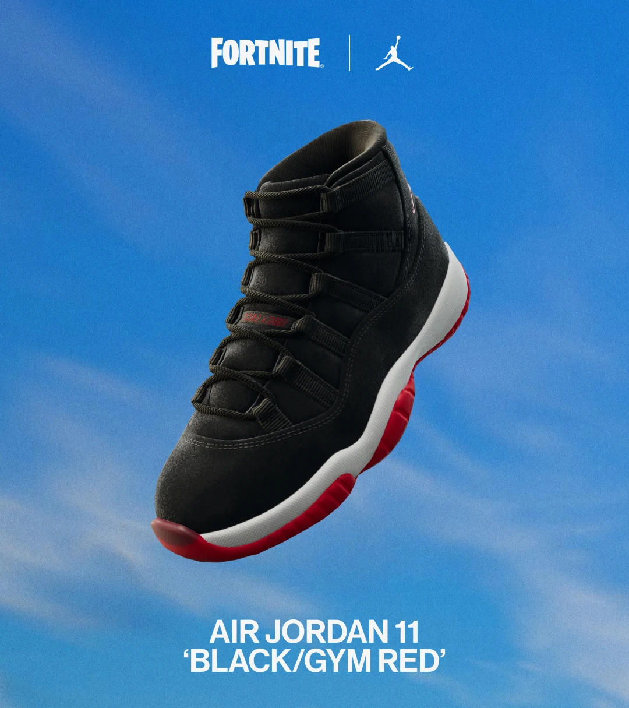
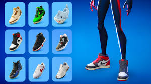

CALZADO EN EL JUEGO
LLEGAN A FORTNITE ZAPATILLAS ÉPICAS
Descubre un nuevo tipo de cosmético de Fortnite para llevar la expresión personal a otro nivel.
Con motivo del nuevo lanzamiento de producto de Fortnite, varios modelos de zapatillas Nike y Jordan estarán disponibles en la tienda objetos durante todo el mes.
Calzado: segundo lanzamiento
Lo mejor de Jordan, desde clásicos de siempre a modelos reinventados. Disponibles a partir del 26 de noviembre.
¿Cuánto cuestan los Air Jordan 1 en Fortnite?
Para los jugadores con el pase de Remix, las icónicas Air Jordan 1 Retro High OG Black Toe Reimagined estarán disponibles al lanzarse la versión 32.11.
Precio de los tenis Nike y Jordan en Fortnite
Nike Cortez Leather OG: 800 paVos
Nike Air Foamposite One “Galaxy”: 1000 paVos
Nike Shox R4 “Comet Red”: 1000 paVos
Zampatillas: 600 paVos
Air Jordan 3 Retro “Palomino”: 800 paVos
Air Jordan 3 “Black Cement-Gray”: 1000 paVos
Air Jordan 11 “Black/Gym Red”: 1000 paVos
Air Jordan 4 Retro “Manila”: 1000 paVos
La llegada del calzado estará marcada por un emoticon que podrás conseguir de manera gratuita “Estilo deslumbrante”. Visita la tienda entre el 21 de noviembre y el 1 de diciembre para conseguirlo gratis.
A partir del 21 de noviembre. Kicks, añade calzado real y original de Fortnite a los atuendos de los fanáticos para darles un nuevo estilo, incluyendo los icónicos Air Jordan 1.
Los icónicos Air Jordan 1 Retro High OG Black Toe Reimagined, incluidos en el Pase Remix, se desbloquearán mañana, 13 de noviembre. Ese mismo día, el calzado tendrá su propia sección en la tienda, con nuevos estilos que irán apareciendo.
Los primeros cuatro lanzamientos incluirán tenis Nike: como los Nike Shox R4 Comet Red y los Nike Cortez Leather OG; así como kicks de Jordan como los: Air Jordan 3 Black Cement-Gray y los Air Jordan 11 Black/Gym Red.
De igual forma, Fortnite debutará con su calzado original, Zampatillas.
Durante su lanzamiento, los tenis se podrán combinar con más de 500 atuendos existentes, y se espera que sea compatible con más del 95 % de los atuendos para la primavera de 2025.
Al comprar un nuevo calzado en la tienda, puedes hacer clic en el nuevo botón <
También puedes filtrar los atuendos que tienen en el casillero para ver cuáles son compatibles con el calzado. O bien, dirígete a la página de compatibilidad de atuendos Fortnite Kicks, que contiene la lista completa de atuendos compatibles actualmente.
Estas son las zapatillas
